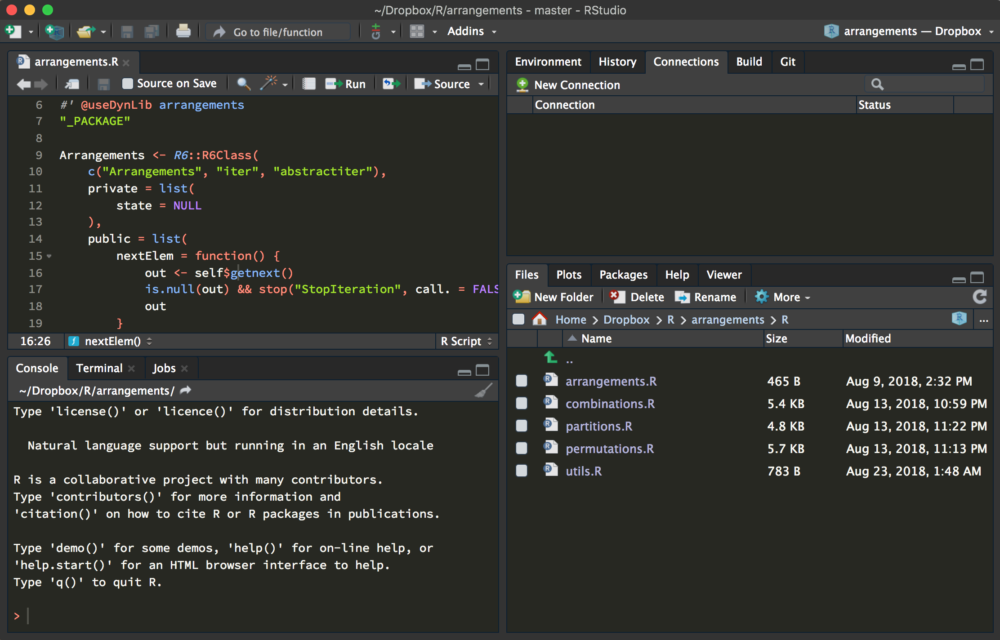
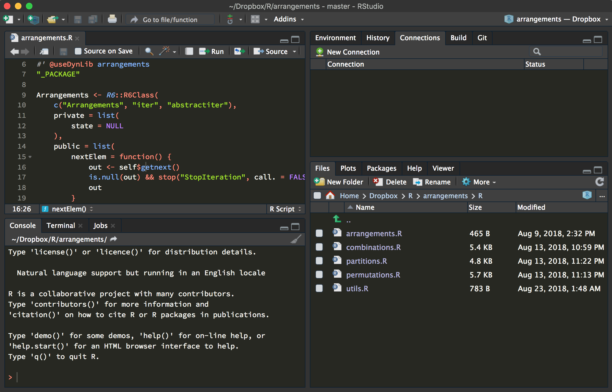

Capítulo 1 Introducción e instalación
R y RStudio
R es un lenguaje de programación interpretado diseñado para la computación estadística y proporcionar un ambiente gráfico. R esta basado en el lenguaje de programación estadístico S, el cual fue desarrollado en los laboratorios Bell por John Chambers, Rick Becker y Allan Willks. Este lenguaje llamaba a subrutinas de FORTRAN aunque después, en 1988, fue reescrito en lenguaje C (Wikipedia contributors 2020).
La idea de R nació en Nueva Zelanda por Ross Ihaka y Robert Gentleman con la intención de crear un lenguaje que ayudará en la enseñanza estadística de la Universidad Nueva Zelanda, esto en 1992, y fue hasta 1995 que se lanzo una primera versión estable. Ya mediados de 1997 se creo un grupo para modificar el código fuente de este lenguaje. La mayoría de las funciones en R están escritas en el propio lenguaje pero, gracias al trabajo de la comunidad, se han hecho muchas implementaciones y procedimientos que están escritos en C, C++ y FORTRAN para lograr una mayor eficiencia en cuanto al tiempo y memoria.
A partir de 1995 se decide usar la licencia GNU para que R sea un software libre, es decir, que se puede consultar el código fuente, se puede modificar las funciones internas, aunque no es buena idea si no se tiene un conocimiento profundo del lenguaje. R no esta diseñado para ser un lenguaje de programación rápido, si no que su propósito es hacer un análisis de datos interactivo y fácil para humanos.
Respecto a RStudio, este es una IDE disponible desde el 2011 que permite trabajar de una manera más fluida con el lenguaje de programación R incluyendo una consola donde se puede trabajar de manera directa con el lenguaje, un editor de textos para guardar nuestro código, crear Scripts, etc, distintos paneles para visualizar gráficas, navegar en los distintos directorios donde estemos posicionados y un gran conjunto de herramientas que facilitan la integración de librerías y la creación de documentos de distintas extensiones.
En RStudio también se puede trabajar con otros lenguajes de programación e integrar estos con R, como por ejemplo Python; de hecho, desde el 2019 se tiene soporte para Notebooks de Jupyter. Además de que, como cualquier IDE, se puede personalizar un poco la interfaz para trabajar más cómodamente.
 

Fuentes: RStudio 1.1 Preview - I Only Work in Black; Theme Black.
Hay que tener en cuenta los siguientes puntos:
- Hay una sesión de R corriendo cuando se está en RStudio.
- La consola de R es la interfaz entre R y el usuario.
- En la sesión hay objetos. Todo en R es un objeto: vectores, tablas, funciones, etc.
Finalmente:
Instala R, a free software environment for statistical computing and graphics desde el CRAN de acuerdo a tu sistema operativo; más adelante se verá que es el CRAN.
Instala el entorno de desarrollo integrado RStudio
Si previamente habías instalado alguna versión de R y RStudio en tu computadora, sugerimos reinstalar ambos para tener las versiones más actualizadas.
Recursos adicionales
Gran parte de este trabajo esta basado en los libros (Wickham 2019) y (Wickham and Grolemund 2016) entre otros, así como los sitios web oficiales de R Fundation como (The R Fundation, n.d.). Si no estás del todo familiarizado con el lenguaje, te recomendamos lo siguientes recursos donde podrás encontrar información útil sobre R y RStudio.
References
The R Fundation. n.d. “What Is R?” https://www.r-project.org/about.html.
Wickham, Hadley. 2019. Advanced R. 2nd ed. CRC press. https://adv-r.hadley.nz.
Wickham, Hadley, and Garrett Grolemund. 2016. R for Data Science: Import, Tidy, Transform, Visualize, and Model Data. " O’Reilly Media, Inc.". https://r4ds.had.co.nz.
Wikipedia contributors. 2020. “R (Programming Language) — Wikipedia, the Free Encyclopedia.” https://en.wikipedia.org/w/index.php?title=R_(programming_language)&oldid=978636340.